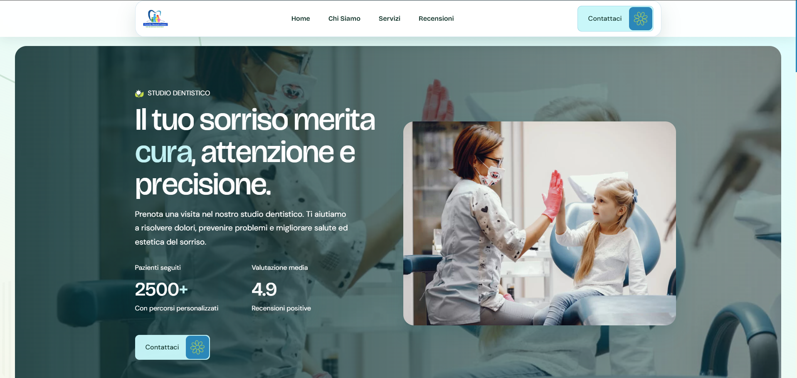

Sito da zero o aggiornamento
Ti creo un sito da zero funzionale tramite un legame aperto con cliente
Siti web chiari per attività locali
Sono Luca, un singolo sviluppatore freelance che aiuto bar, pizzerie, parrucchieri, negozi e professionisti a farsi trovare meglio online con SitiWeb accessibili.
Menu, orari, contatti e indicazioni sempre chiari.
Problemi che risolvo
Ti creo un sito da zero funzionale tramite un legame aperto con cliente
Miglioro la visibilità online del sito, ti ottimizzo il sito per essere mostrato da Smartphone e PC, e sincronizzo il sito della tua attività a Google Maps.
Un sito essenziale, chiaro e professionale, pensato per partire online senza spendere troppo e senza sembrare improvvisati.
Portfolio
Una Sito web intero con menu, Servizi e pulsante di chiamata sempre visibili da smartphone.
Obiettivo: più prenotazioni telefoniche nei weekend.

Hai un'attività e vuoi vedere il tuo nome qui? Raccontami il tuo progetto
Servizi e pacchetti
Prezzi trasparenti, obiettivi definiti e una struttura pensata per piccole attività che vogliono fare un passo concreto.
Pagamento solo a servizio finito per la pubblicazione
Pacchetto Base
100€
Ideale per: chi vuole una presenza online semplice e veloce.
Pacchetto Standard
150€
Ideale per: chi vuole una pagina più completa con più sezioni e funzioni.
Pacchetto Avanzato
200€
Ideale per: chi vuole un sito più completo e modificabile in autonomia.
Servizi aggiuntivi
Oltre ai pacchetti per realizzare il sito, puoi scegliere una gestione continuativa oppure richiedere interventi singoli in caso di necessità.
Hosting e gestione sito
20€ / mese
Consulenza a chiamata
da 30€
I costi indicati riguardano interventi chiari e circoscritti. Funzionalità avanzate, modifiche complesse o richieste continuative vengono valutate prima insieme al cliente.
Modalità di lavoro
Mi racconti la tua attività, cosa ti serve e che risultato vuoi ottenere.
Mettiamo insieme testi, immagini, servizi, orari e contatti utili.
Preparo una struttura chiara per capire subito direzione e contenuti.
Sviluppo la pagina o il sito con attenzione a mobile, leggibilità e ordine.
Raccogliamo le modifiche e rifiniamo ciò che serve prima della pubblicazione.
Portiamo il sito online e controlliamo che tutto sia pronto per i visitatori.
Chi sono
Studio informatica presso l’istituto tecnico I.I.S Torriani, ho deciso di applicare quello che apprendo ogni giorno nella realtà, aprendo un percorso come sviluppatore di siti web.
Aiuto le piccole attività, negozi e professionisti tramite siti web semplici, economici e accessibili.
Durante un tirocinio presso l’azienda Pragmind sotto ITS Impresa, ho osservato da vicino i professionisti del settore, imparando nuove tecnologie, un metodo concreto e gestire richieste reali.
Ogni progetto che porto a termine rappresenta per me un passo di crescita: mi impegno a valorizzare il lavoro di ogni cliente come se fosse il mio, perché ogni sito è un’occasione per migliorare e costruire esperienza concreta.
FAQ
Ho un tempo medio di 2 Settimane ma dipende dalla complessità e dalla rapidità con cui ricevo materiali e conferme. Per una landing semplice, spesso bastano pochi giorni lavorativi.
Sì, per ciò che è incluso nel pacchetto scelto. Richieste extra, funzioni aggiuntive o gestione continuativa vengono concordate prima.
Con il pacchetto WordPress posso impostare una struttura modificabile in autonomia. Per landing statiche, le modifiche vanno valutate insieme.
No. Mi rivolgo soprattutto a clienti locali, ma posso collaborare online con piccole attività e professionisti in tutta Italia.
Sì, posso aiutarti a organizzare,comprimere,migliorare grafica di testi e immagini disponibili. Se servono grafiche più avanzati, li concordiamo a parte.
Pronto a iniziare?